A Fórmula 1 está adotando combustíveis sintéticos e fontes de bioenergia, contribuindo para a meta de emissão zero até 2030. Esses combustíveis são criados com tecnologias de captura de carbono e biomassa.
Redução de Emissões: Reduz as emissões de CO₂ nos motores.
Sustentabilidade: Fontes renováveis, como resíduos agrícolas.
Combustivel Sintéticos

O uso de materiais reciclados em componentes do carro reduz o impacto ambiental, mantendo a resistência e a leveza essenciais.
Metais Leves: Melhoram a eficiência e reduzem o consumo.
Fibra de Carbono Reciclada: Economiza recursos e mantém a resistência.
Materiais Sustentáveis
A introdução de motores híbridos foi um passo importante, permitindo que a Fórmula 1 combine potência com eficiência energética.
Recuperação de Energia: Reaproveita energia das frenagens para recarregar baterias.
Redução de Combustível: Menos consumo e emissões.
Motores Híbridos
O design aerodinâmico reduz o consumo de energia e melhora a performance dos carros.
CFD: Simulações para projetar formas mais eficientes.
Design de Asa Frontal: Reduz o arrasto e melhora a eficiência.
Aerodinâmica
